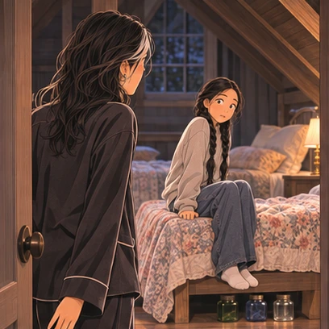
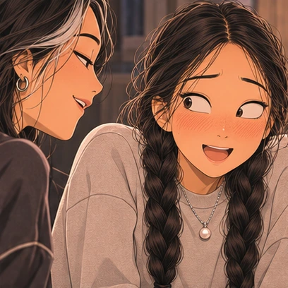

Part 109
“What are you doing?” The floorboards creak behind me, and I turn to see Sam in her pajamas.
“Nothing,” I say, jumping to my feet.
I’m full of jittery energy. Beneath the bed, the star jars wait.

But I glance at the clock. It’s only evening. I still have hours before everyone’s asleep—before I can sneak a jar downstairs and bait the tiger.
Sam narrows her eyes. She takes a breath, like there’s something she wants to ask, but then shakes her head.
It’s not like Sam to hold her questions in, and I don’t know if I’m grateful, or sad.
When she opens her mouth again, she seems to change her mind, asking a different question instead. “What’s the deal with that boy?”
“He’s helping me . . . do something.” I can’t help but smile a little when I add, “He’s my friend.”
She raises an eyebrow, and her lips lift into that I know something you don’t smirk. “Your friend?”
My cheeks get hot when I realize what she means. “It’s not like that.”

Her voice is teasing. “Not like what?”
“Not like how you’re acting.”
Sam laughs. Apparently my embarrassment puts her in a good mood.
Then her eyes soften a little, and she points to the floor in front of the mirror. “Sit down. If you have a crush, you should learn how to do your hair.”